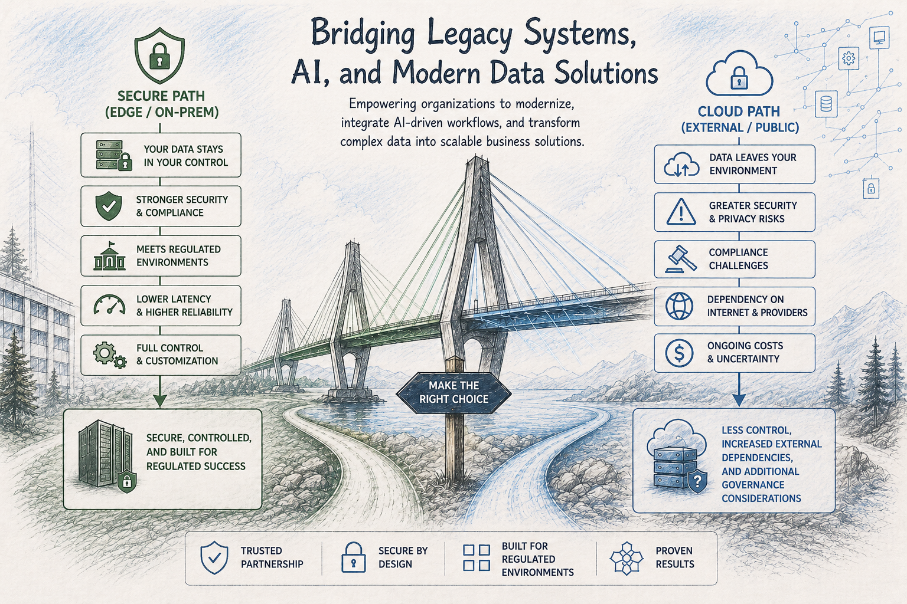

Path Bridge Group helps organizations modernize platforms, integrate AI-driven workflows, and transform complex data into scalable business solutions designed for secure and regulated environments.

Solutions designed with security, governance, and operational control in mind.
Designed for organizations operating within complex compliance and data governance ecosystems.
Bridging legacy infrastructure with modern AI and intelligent workflow systems.
Practical modernization strategies focused on scalability, stability, and long-term value.
Modernizing aging platforms and workflows while preserving operational continuity. Learn More
Practical AI integration strategies for controlled and enterprise environments. Learn More
Scalable data pipelines, intelligent workflows, and enterprise data transformation solutions.
Learn MoreStreamlining operational processes using modern automation and integration approaches.
Learn MorePath Bridge Group focuses on bridging legacy systems, secure AI modernization, and enterprise data solutions. The organization combines practical engineering experience, software modernization, intelligent workflow integration, and secure architectural thinking to help organizations navigate modern technology transformation.
Services are also offered under the Z-AppXpert® brand for software engineering, technical consulting, and advanced development solutions.
Path Bridge Group believes effective technology adoption begins with understanding. Our educational focus connects foundational reasoning, practical engineering, and emerging technology so individuals and organizations can make better technical decisions.
Strengthening analytical thinking, quantitative reasoning, and structured problem-solving skills that support better technical and business decisions.
Practical learning focused on software development, databases, data pipelines, system integration, and modern engineering practices.
Building practical understanding of artificial intelligence, modern models, intelligent workflows, and the responsible use of emerging technologies.
Technology should serve the problem—not the other way around. Path Bridge Group begins by understanding the existing environment, then identifies a practical path toward modernization.
Understand the business problem, existing systems, data, workflows, constraints, and people affected before recommending a solution.
Define a practical modernization path using the appropriate combination of software, data engineering, automation, and AI.
Introduce solutions incrementally with security, human oversight, operational continuity, and measurable outcomes in mind.
Path Bridge Group helps organizations identify practical ways to improve legacy systems, data workflows, automation, and AI-enabled processes without losing sight of security, operational continuity, and measurable business value.
Start a Conversation